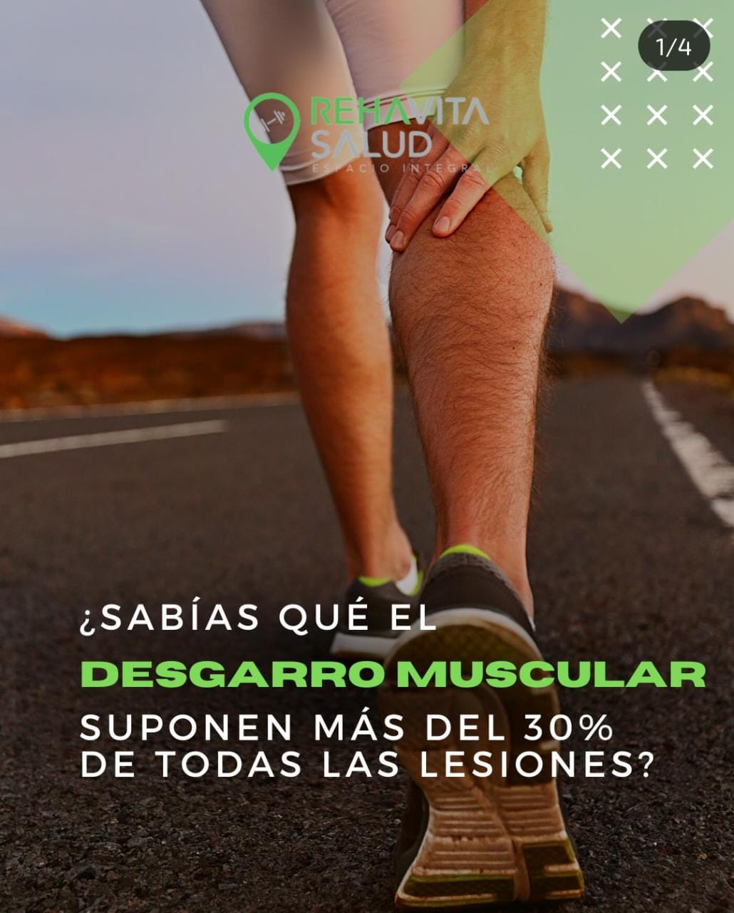
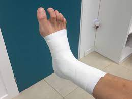
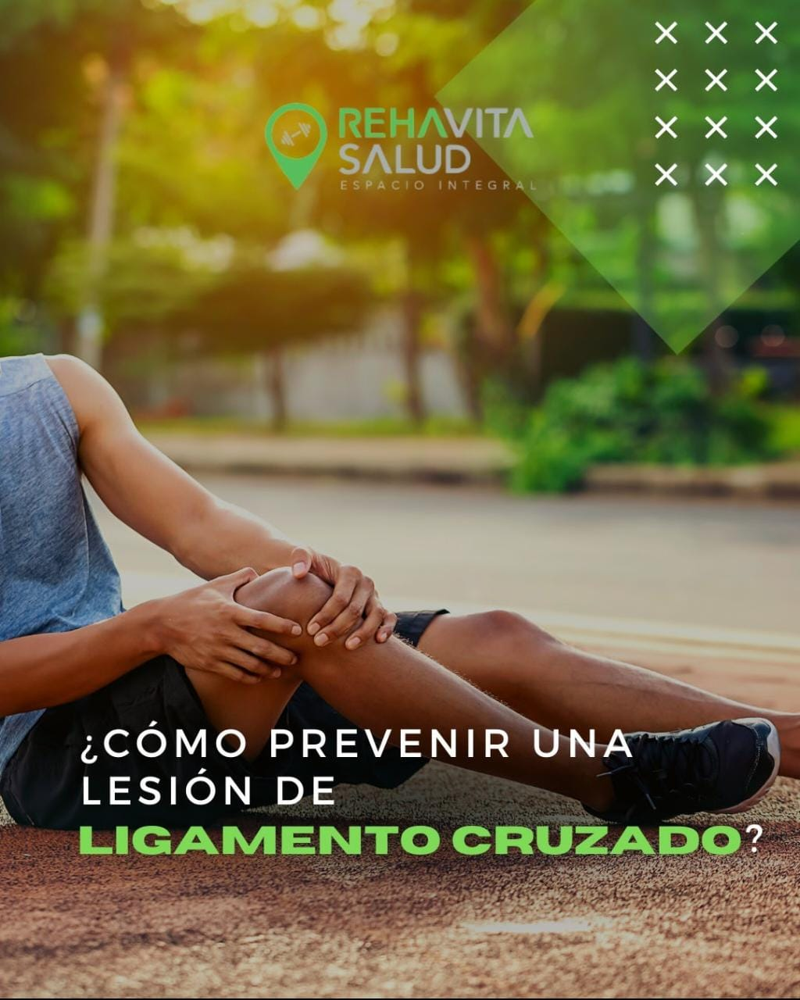
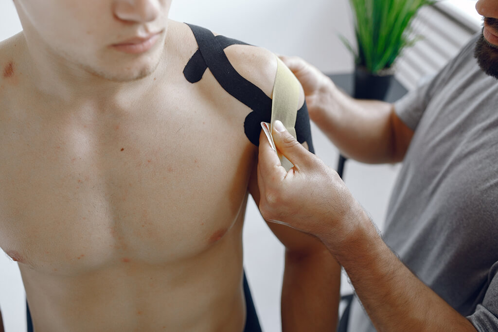

la importancia de la prevencion de lesiones
algunas de las lesiones mas comunes son

info de desgarros y como prevenir

info de esguince de tobillo y como prevenir

info de ruptura de ligamentos cruzados y como se previene
